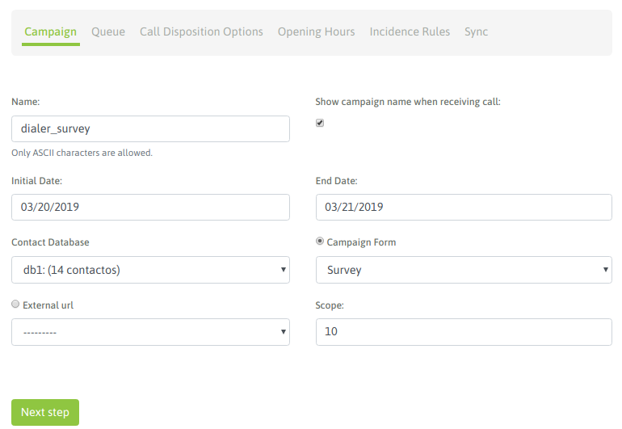
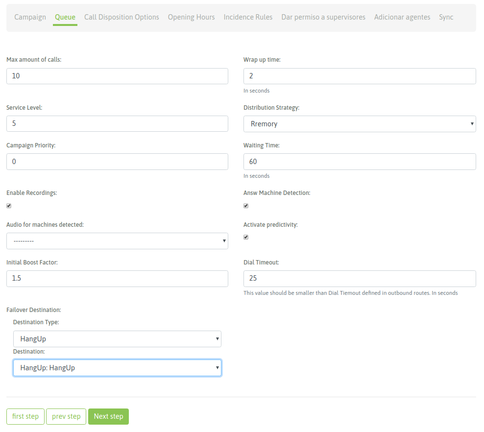
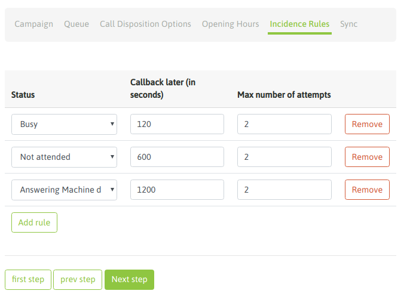
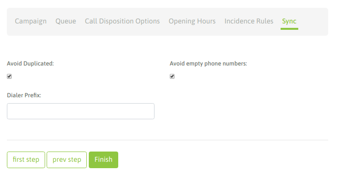
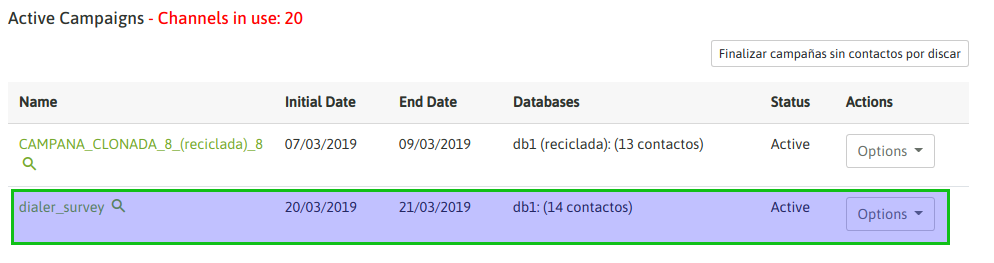
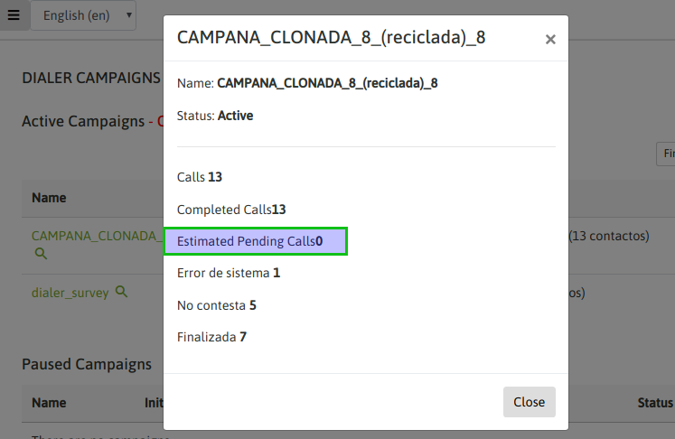
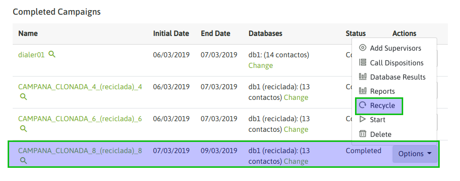
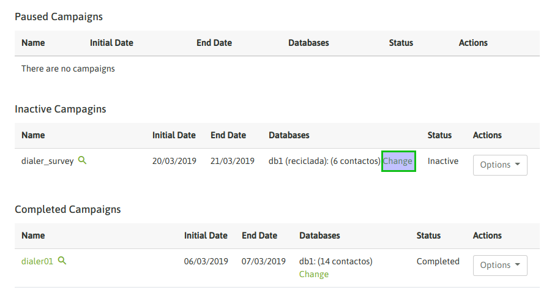
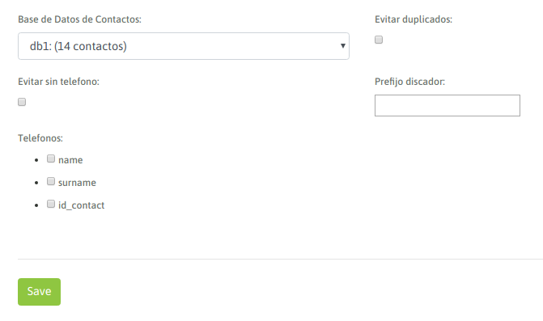

Campañas con discador predictivo¶
Omnileads pone a disposición el concepto de campañas de discado automático a través de un discador predictivo.
Importante: No se provee la funcionalidad de discador automático dentro de las prestaciones del software, para este tipo de campañas está contemplada la integración con Wombat Dialer . La utilización de ese software está supeditada a la adquisición de la correspondiente licencia con el fabricante de Wombat Dialer.
Aclarado el tema del componente “engine dialer”, se procede con la explicación de los parámetros en juego a la hora de generar una campaña con discado predictivo.
- Creación de campaña dialer
Ingresar al menú Campaigns -> Dialer Campaigns -> New Campaigns en donde se despiegan una secuencia de pantallas de configuración.
La primera pantalla luce como la figura 1.
Figure 1: Campaigns parameters
- Name: nombre de la campaña
- Show campaign name whe reciving call: se puede habilitar para que cada llamada conectada por el dialer al agente implique la notificación del nombre de la campaña asociada a dicha llamada.
- Initial date: es la fecha en la que, estando activa la campaña y con agentes conectados, comenzará a discar.
- End date: es la fecha en la que, estando activa la campaña y con agentes conectados, dejará de discar, aunque haya aún números pendientes de marcar.
- Contact database: la base de contactos que utilzará el discador a la hora de generar llamadas
- Campaign form: campo de selección del formulario que se desplegará cada vez que un agente califique un contacto con la calificación “de gestión”.
- External URL: URL a disparar cada vez que el agente lo indique.
- Scope: se define como la cantidad de gestiones positivas que se esperan para la campaña. En la supervisión de la campaña se muestra en tiempo real el porcentaje de avence de la campaña respecto al objetivo definido.
Una vez completados estos campos, se debe dar click al botón “Next”, para continuar con la generación de nuestra campaña.
La siguiente pantalla establece los parámetros de comportamiento de la campaña, como lo expone la figura 2.
Figure 2: Campaigns parameters
- Max amount of calls: es el número de llamadas que se permiten poner en cola de espera. Por encima de ese número, la llamada será enviada a la acción “failover”.
- Wrapup time: es el tiempo (en segundos) de gracia que cada agente tendrá entre cada llamada conectada por el discador.
- Service level: es un parámetro para medir cuántas de las llamadas fueron contestadas dentro de esa franja de tiempo. El valor se expresa en segundos.
- Distribution strategy: método de distribución de llamadas que usará la campaña sobre los agentes. Para campañas salientes, se recomienda RRmemory.
- Campaign priority: Es un parámetro lineal en la escala del 1 al 10, que implica cuán importante son las llamadas de esta campaña respecto a otras. Establece prioridades para los agentes que trabajan en varias campañas en simultáneo. Si se deja el valor en “0” (por defecto) se mantiene una equidad con el resto de las campañas.
- Waiting time: es el tiempo (en segundos), que la llamada contactada quedará en cola de espera, aguardando que un agente se libere para conectarle la misma.
- Enable recordings: se debe tildar este check en caso de requerir que los llamados sean grabados.
- Detectar contestadores: se debe tildar este check, en caso de requerir que se detecten y eviten las llamadas con contestadores automáticos.
- Audio para contestadores: se puede indicar la reproducción de un audio en caso que se detecte un contestador automático. Para que esté disponible el audio debe subirse previamente desde el menú Audios > Nuevo audio
- Activar predictividad: Wombat Dialer ofrece una configuración que posibilita revisar estadísticas de efectividad de las llamadas. En función de esos resultados, en lugar de discar uno por uno los números de teléfono de la base de contactos, selecciona el promedio de llamadas que resultan exitosas y efectúa tantas llamadas en simultáneo en función de ese dato.
- Factor de boost inicial: indica el valor por el cual se desea multiplicar el comportamiento de la predictividad. Por ejemplo: si el discador detectó que puede realizar tres llamadas en simultáneo porque es el resultado que le arroja la estadística de comunicaciones exitosas, colocando “2” en el factor de boost inicial se le pide al discador que duplique ese valor y realizará entonces seis llamadas a la vez.
- Failover dst: destino hacia el cual se enviarán las llamadas que hayan sido expiradas (superó el tiempo de espera asociado).
Luego de completar todos los campos, se debe presionar el botón “Next”.
En la siguiente pantalla se configuran las opciones de calificación, seleccionando del desplegable una a una las calificaciones que se utilizarán para las llamadas dentro de la campaña. Además, se deberá indicar si se trata de una calificación de “Engaged” o de Gestión (la que dispara el formulario de campaña) o bien de una calificación “Sin Acción” que simplemente clasifica el contacto.

Figure 3: Campaigns parameters - call dispositions
Se guardan los cambios haciendo click en “Next” y llegamos a la configuración que determina cuáles días de la semana y dentro de cuáles horarios la campaña efectuará llamados (siempre dentro del rango de fechas establecidas en el primer paso de la creación de la campaña).

Figure 4: Campaigns parameters - days and hours
Se hace click en “Next” y en este caso se trabaja con las “reglas de incidencia”, es decir bajo cuáles condiciones se reintentará contactar a números que dieron Ocupado, Contestador, No Contesta, Temporalmente fuera de cobertura, etc.
Figure 5: Campaigns parameters - days and hours
Como se puede observar en la figura 5, los campos a completar permiten determinar cada cuántos segundos debe reintentarse la comunicación y cuántas veces como máximo se debe intentar según cada estado.
Los estados telefónicos que podrán reintentarse marcar automáticamente son: - Ocupado - Contestador Automático detectado - Destino no contesta - Llamada rechazada (Rechazado): cuando la llamada no pudo ser cursada por problemas inherentes a la red telefónica externa. - Timeout: cuando la llamada se contactó, se conectó pero ningún agente estuvo libre como para gestionar la misma.
Se hace click en “Next” para llegar al último paso de la creación de la campaña.
Figure 6: Campaigns parameters
En este paso, simplemente se indican tres opciones:
- Evitar duplicados: es un check que sirve para indicar al sistema que no se disque dos veces un mismo número, por más que esté dos veces en la base de contactos.
- Evitar sin teléfono: es un check que sirve para indicar al sistema que no tenga en cuenta los registros de la base de contacto que no posean un teléfono principal.
- Prefijo: este campo sirve para indicar al discador si debe anteponer algún prefijo delante de cada número de la base de contactos, este prefijo antepondría a cada llamada el discador para luego ser procesado por nuestras rutas salientes.
Por último, si se presiona el botón “Finish”, la campaña se termina de crear.
Una vez que la campaña está creada, aparece como una campaña “Inactiva” (figura 7), dentro de la vista de listado de campañas dialer.

Figure 7: Inactive campaign
En este punto el administrador debe asignar los agentes a la campaña para luego activar la misma cuando se desee que comience a discar contactos de la base.

Figure 8: Agents dialer camp
Finalmente el administrador puede activar la campaña como lo indica la figura 9.

Figure 9: Activate camp
Luego de activar nuestra campaña, automáticamente pasamos a visualizarla en la sección de campaña activas (figura 10)
Figure 10: Active campaigns
Finalización de campañas dialer¶
Para determinar cuando una campaña dialer se queda sin registros, se debe consultar el estado de la misma haciendo click en el nombre de la campaña (figura 11).
Figure 11: Campaign pending calls
En caso de certificar que el valor “Llamadas pendientes” está en cero, se debe proceder con la finalización de la campaña (figura 12).

Figure 12: Finish dialer campaign
La campaña pasa a listarse dentro de la sección “Campañas finalizadas”.
Reciclado y cambio de bases de contactos¶
Una vez finalizada una campaña se puede re-utilizar mediante dos posibilidades:
- Reciclado de la base de contactos
Esta opción permite al administrador seleccionar contactos de la base, con ciertas calificaciones ya sea de agentes (llamadas conectadas) así como también generadas por el discador (llamadas no contactadas) como criterio para reciclar la campaña y que esta vuelva a intentar marcar a los contactos que caigan dentro de las calificaciones indicadas en el reciclado.
Para reciclar una campaña finalizada, debemos seleccionar la campaña e ingresar a las opciones para seleccionar la opción Recycle
Figure 13: Campaing recycle
Allí se despliegan dos opciones:
- Reciclar sobre la misma campaña
Esta vía nos lleva a volver a marcar a los contactos seleccionados en el reciclado, sobre la misma campaña desde la que se genera el reciclado.
- Reciclar en una nueva campaña
Esta vía nos lleva a volver a marcar a los contactos seleccionados en el reciclado, en una nueva campaña cuya base de contactos serán los contactos reciclados de la campaña.
Para completar el reciclado se deben seleccionar las calificaciones que se deasean volver a llamar para luego pasar por las etapas del wizard de campañas dialer para ajustar cualquier inherente a la configuración de la campaña reciclada.

Figure 14: Recycle; call dispositions

Figure 15: Recycle campaigns parameters
Al ejecutar el reciclado, la campaña (ya se si se reciclo sobre una misma campaña o se ha generado una nueva) se encuentra en estado de “Inactiva”, por lo tanto basta activar la misma para que los contactos reciclados comiencen a ser marcados por el discador.

Figure 16: Recycle campaign activate
- Cambio de la base de contactos
Un campaña puede sustituir su base por otra nueva. Esto permite seguir operando con la misma campaña, pero renovar la fuente de contactos para que siga marcando. De esta manera se sigue el historial de reportes, grabaciones y demás estadísticas en la misma campaña. Para llevar a cabo un cambio de base, la campaña debe estar pausada o bajo el estado de “finalizada”. A partir de allí se indica la acción de “cambio de base” sobre la campaña en cuestión.
Figure 17: database change
Esto desplegará una pantalla similar a la expuesta en la siguiente figura 18.
Figure 18: database change
IMPORTANTE: la estructura de la base de contactos que se puede utilizar como sustituta debe ser similar a la base que se desea sustituir.
Una vez llevada a cabo la sustitución es necesario activat nuevamente la campaña.